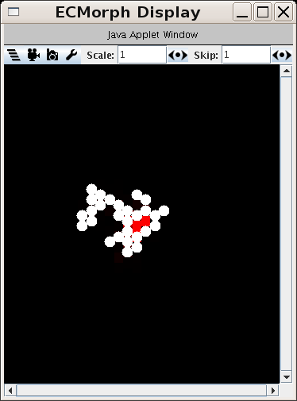
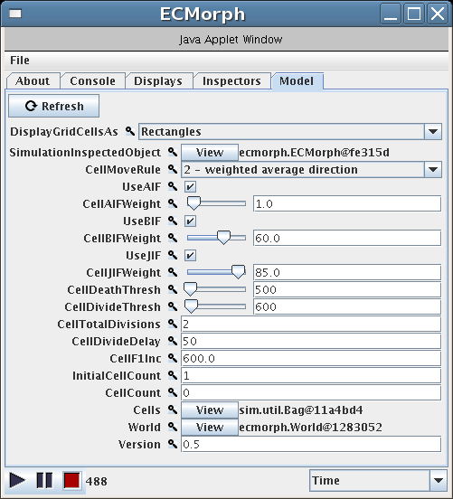
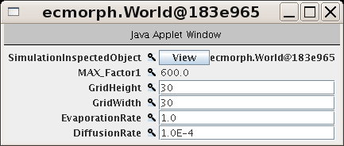

ECMorph
This is a toy model of Endothelial Cell Morphogenesis (ECMorph).
It is intended as an example of a very high level synthetic,
articulated model of cysts forming in vitro. (Mirjam et al)
The link below should download a JAR file you can execute by double clicking or with "java -jar ecmorph-0.6.jar".
After launching the Java Application, you should see two windows pop up on your screen, looking like:
To get a sense for what the model does, simply push the play
button, which is the little triangle pointing to the right in the
bottom left of the control panel. Then immediately push the pause
button, which is just to the right of the play button. You should see
something like the following:

The environment consists of a 2D hexagonal grid. Each point in
that grid represents a space that can be empty or filled with a cell
(a white circle) or a hypothetical substance called "factor1" or both.
Red grid points show a high concentration of factor1 and black grid
points show no "factor1".
At each simulation "cycle," a schedule of events is executed where
the individual events are associated with objects in the simulation.
The cell objects examine their surroundings and, based upon what they
find, will divide, die, and consume or produce factor1. Cells are
composite objects consisting of 6 membrane components (one for each
side in a hexagonal grid) and 3 "interface functions". The membrane
components provide the cell with the ability to sense and act upon its
environment. The 3 "interface functions" and the logic that
reconciles those functions constitute the cell's decision making
logic. Each interface function works toward a single constraint:
- The Apical Interface Function (AIF) tries to generate a region
next to the cell that has a large amount of factor1.
- The Basal Interface Function (BIF) tries to generate a region next
to the cell that is very low in factor1.
- The Junction Interface Function (JIF) tries to ensure that the
cell is a part of a community of cells, attached to others but not
completely surrounded.
The model intends to explore whether (and if so under what
conditions) such an assembled model might generate interesting
collections of cells. In particular, we'd like to be able to generate
cysts and tubules.
A more complete description is provided in the About tab of the
control panel. You can scroll down or make the control panel window
larger to see it. You should be able to play around with the model at
this point. But, below, we'll walk through a
particular use case of the model just to give a clear idea of how it
might be used.
Changing the Diffusion Parameters
By default, the factor1 is set so that it cannot diffuse, which
causes the model to show bright red grid points wherever there is any
factor1. There are two parameters by which we can manipulate how
factor1 diffuses: the evaporation and diffusion rates. To manipulate
these:
- First run the model with the default settings by hitting the play
button. Then after watching it for awhile, hit the stop button.
- Now we'll change the parameters and run it again. Click on the
"Model" tab in the control panel. And stretch the window so that you
can see all the widgets in the window. Like:

- Next click the "View" button at the bottom of the Model tab. This
should open a new window that allows you to view the parameters for
the "World".

- The evaporation rate sets how much of any diffusive material in
the space "evaporates" during each simulation cycle. However, it is
inverted. If the evaporation rate is, say, 1.0 (the default), then
zero factor1 will evaporate during each cycle. If it's 0.75, then 25%
of the factor1 at any given grid point will evaporate for each cycle
that passes. Place the cursor in the evaporation rate box, delete the
1.0 there and type in: 0.99.
- Now hit the play button. The simulation may or may not execute
forever because it is stochastic. If it stopped, it might have left a
"trace" of factor1 in the space. If there were more tasks the
simulation had to perform, you'd see the red fade to black. But,
being a discrete event simulation where the only valid events are
related to cells, when all the cells are gone, the simulation ends.
If it didn't stop, then you should simply notice that the red factor1
doesn't stick around very long before it evaporates. Hit the stop
button.
- Now let's change the evaporation rate back to 1.0 so that no
evaporation occurs. And we'll change the diffusion rate from 0.0004
(4.0E-04) to 0.001. Then hit the play button again. (Note that
sometimes the framework gets confused about which gui widgets you can
edit. If after running and stopping the simulation, you can't type in
a widget, just move the mouse around and click in the other windows a
few times. When you come back to the widget you were trying to edit,
you should be able to edit the values again.)
- Again, if the simulation doesn't end quickly, you will see the red
factor1 fade over time after it is placed in that grid point by a
cell.
Changing the experiment size
To get an idea of what the sim can do, hit the stop button to be
sure it's stopped. Then try setting the world size to 300x300 and the
initial cell count to 300. If you have a relatively fast computer
with enough memory, this should run well enough. Note that you may
have to increase the amount of memory available to the Java VM by
running the Java Control Panel and editing the applet settings.
Notes:
- If you close a display, it is hidden -- you can get it back under
the Displays tab in the console window. If you close the the console
window, the simulation ends.
- By default, the grid points are visualized as squares. This is
just in the visualization. It's set that way because rendering the
hexagonal grid is computationally expensive and provides little
benefit. If you'd like to see the hex grid points, Click on the Model
tab in the control panel and select the Hexagons from the
"DisplayGridCellsAs" drop down list.
References
Mirjam M.P. Zegers, Lucy E. O'Brien, Wei
Yu, Anirban Datta and Keith E. Most ov, "Epithelial polarity and
tubulogenesis in vitro" in TRENDS in Cell Biology, Vol. 13 No.4, April
2003.